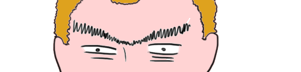
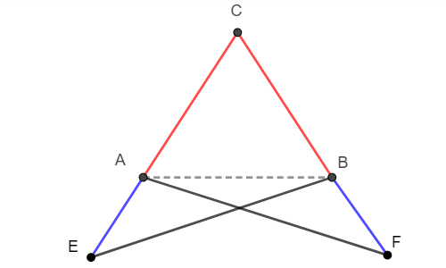

Proprietà dei triangoli isosceli
Definizione
Un triangolo si dice isocele se ha due lati congruenti.

Teorema del triangolo isoscele
Sia \(ABC\) un triangolo.
Se \(ABC\) è isoscele,
allora ha gli angoli alla base congruenti.
Tracciamo la bisettrice dell'angolo \(\color{#9933ff}{ACB}\), quello contenuto tra i lati congruenti.
Poniamo l'attenzione ai due triangoli che si formano: \(ADC\) e \(DBC\).
- Il lato \(\color{#00ff00}{CD}\) appartiene sia al triangolo \(ADC\) che al triangolo \(DCB\).
- Gli angoli \(\color{#7f00ff}{ACD}\) e \(\color{#7f00ff}{DCB}\) sono congruenti perché \(\color{#00ff00}{CD}\) è la bisettice dell'angolo \(ACB\).
- I lati \(\color{red}{AC}\) e \(\color{red}{CB}\) sono congruenti perché per ipotesi il triangolo \(ABC\) è isoscele.
Lato, angolo, lato... uhmmm ma certo!
Possiamo appellarci al primo criterio per affermare che i triangoli
\(ADC\) e \(DCB\) sono congruenti.
Se questi due triangoli sono congruenti, in particolare i loro angoli \(CAD\) e \(CBD\) sono congruenti.
\(CAD\) è solo un altro modo di chiamare l'angolo \(CAB\). Stesso vale per \(DCB\), che possiamo chiamare anche \(ABC\).
Quindi abbiamo proprio dimostrato che l'angolo \(CAB\) è congruente all'angolo \(ABC\).
Bene, ora sappiamo che
se un triangolo ha due lati congruenti,
allora ha due angoli congruenti.
Domanda: è vero anche il contrario? Cioè che
se ha due angoli congruenti,
allora un triangolo ha due lati congruenti.
...Boh!
Se fosse falso potremmo disegnare un triangolo che abbia
due angoli congruenti ed i lati non congruenti.
Proviamoci!
Anche se scambiamo ipotesi e tesi, il teorema sembra proprio vero!
Ma come al solito c'è qualcuno che non si fida....
Dimostriamo a Giancaterino che anche questa volta abbiamo ragione.
Teorema inverso del triangolo isoscele
Sia \(ABC\) un triangolo.
Se \(ABC\) ha due angoli congruenti,
allora è isoscele.
Prolunghiamo i lati \(CA\) e \(CB\) di due segmenti congruenti.
Di quanto? Scegliete voi trascinando il punto \(E\).
Gli angoli \(\color{#00ff00}{CAB}\) e \(\color{#0000ff}{BAE}\) sono supplementari.
Anche gli angoli \(\color{#00ff00}{CBA}\) e \(\color{#0000ff}{ABF}\) sono supplementari.
Gli angoli \(\color{#00ff00}{CAB}\) e \(\color{#00ff00}{CBA}\) sono congruenti.
Quindi \(\color{#0000ff}{BAE}\) e \(\color{#0000ff}{ABF}\) sono congruenti.
Guardiamo i triangoli \(ABF\) ed \(AEB\):
-
I lati \(\color{#f40099}{BF}\) e \(\color{#f40099}{AE}\) sono congruenti per costruzione.
-
Abbiamo visto che gli angoli \(\color{#0000ff}{ABF}\) ed \(\color{#0000ff}{EAB}\) sono congruenti.
-
Il lato \(\color{#ff5500}{AB}\) è in comune.
Lato, angolo, lato... possiamo appellarci di nuovo al primo criterio per affermare che i triangoli \(ABF\) ed \(EAB\) sono congruenti.
Ora concentriamoci sui triangoli \(AFC\) e \(EBC\)
-
Gli angoli \(\color{blue}{AFB}\) e \(\color{blue}{AEB}\) sono congruenti,
perché fanno parte dei triangoli congruenti \(ABF\) ed \(EAB\)
-
Il lato \(\color{#00ff00}{AF}\) è congruente al lato \(\color{#00ff00}{EB}\),
perché fanno parte dei triangoli congruenti \(ABF\) ed \(EAB\)
-
Gli angoli \(CAF\) e \(CBE\) sono congruenti,
perché sono formati rispettivamente dagli angoli \(\color{red}{FAB}\), \(\color{#00ffff}{BAC}\) e \(\color{red}{ABE}\), \(\color{#00ffff}{ABC}\)
angolo, lato, angolo... possiamo appellarci al secondo criterio per affermare che i triangoli \(AFC\) ed \(EBC\) sono congruenti.

Concludiamo finalmente:
\(\color{red}{AC}\) e \(\color{red}{CB}\) sono congruenti perché sono la differenza di lati congruenti:
\(\color{red}{AC}\) = \(EC - \color{blue}{EA}\)
\(\color{red}{CB}\) = \(CF - \color{blue}{BF}\)
Bisettrice
La bisettrice di un angolo è la semiretta uscente dal vertice che divide l’angolo in due angoli congruenti.